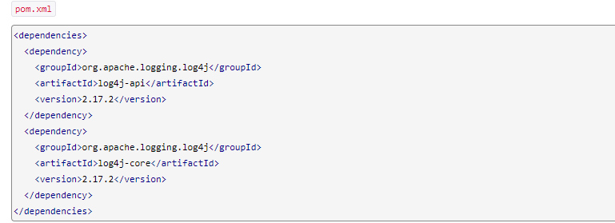
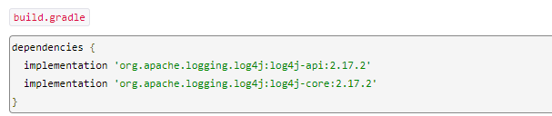
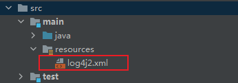

使用Log4j框架的作用通俗的解释：
能够控制日志信息想往哪里打就往哪里打，比如：控制台、文件、邮箱、数据库等等。
能够控制日志信息想怎么打就怎么打，比如：我想要打印时间、程序的名称、程序的方法名、程序的行号、线程的名称等等。
能够控制日志信息想打什么打什么，不想打的就不打，日志信息是分级别的，有时候我只想看错误的信息或者警告的信息，有时候我想看到所有的信息我想调试程序等等。
首先，我们需要引入log4j包
-
对于maven工程，通过如下方式引入依赖

-
对于gradle工程，通过如下方式引入依赖

-
引入log4j包之后，我们可以在External Library下面看到log4j的包体，此时说明包体引入成功
接下来我们开始对log4j进行配置
大体上来讲，有文件配置和代码配置两种方式，这里我们主要介绍一下通过文件配置的方式
log4j支持四种类型的配置文件，分别是
- log4j2.xml
- log4j2.yaml
- log4j2.json
- log4j2.properties
我们这里只介绍log4j2.xml文件，通过这几种文件的配置能达到的效果是一样的
log4j2.xml的文件路径必须是在src/main/resources/下（其他格式的配置文件存放路径也是这里），log4j会自动搜索到这个配置文件并进行初始化配置
